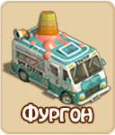

Получено: файл; исходный URL. Первая иллюстрация строки каталога; авторство не подтверждено. Идентичность изображения при замене домена не проверена. Страница: источник.
Фургон
браузерная версия; платформа и дата редакции не установлены- Тип
- Постройка
- Версия и дата
- браузерная версия; платформа и дата редакции не установлены
Данные по источнику · браузерная версия; платформа не установлена · дата редакции списка не установлена
Предварительно: Прочитан список. Имена файлов пиктограмм приводятся как есть: они не гарантируют идентификацию материала. Alt-атрибуты источника содержат ошибки. Отдельная статья и дата не проверены.. Требуется сверка.
- Сведения из списка, включая имена файлов пиктограмм
- [рисунок: furgon.jpg] 500 000 (доступен с 22 ур.) В Фургоне можно создавать билеты и проездные для путешествия по островам, в т.ч платным. Для покупки в игре должно быть минимум 50 соседей. Стадии строительства: 1. 15 [рисунок: Siniy_plastilin.png] + 10 [рисунок: Rezina.png] + 2 [рисунок: zerkalo.png] 2. 15 [рисунок: Provoloka.png] + 05 [рисунок: kompas.png] + 5 [рисунок: Gayka.png] В фургоне можно создать: 1. 01 [рисунок: proezdnoy_na5.jpg] = 10 [рисунок: kraska_zelenaya.jpg] + 1 [рисунок: albom.jpg] 2. 01 [рисунок: proezdnoy_na90.jpg] = 10 [рисунок: akvarel.jpg] + 1 [рисунок: medal.jpg] 3. 01 [рисунок: getony_100.jpg] = 05 [рисунок: tochilka.jpg] + 5 [рисунок: Knigi.jpg] 4. 01 [рисунок: getony_1000.jpg] = 03 [рисунок: slezi_zombi.jpg] + 1 [рисунок: medal.jpg]
Данные по источнику · историческая браузерная версия; возможны различия соцсетей · дата в URL статьи; дата последней редакции не установлена
Предварительно: Фанатская статья; источники moy.su и ЗомбиСити связаны. Дата URL не доказывает, что все указанные рецепты и призы существовали в этот день.. Требуется сверка.
- Доступ и стадии
- Значок уровня 22; покупка за 500 000 монет или 70 зомбаксов, продажа 50 000 монет. Для покупки за монеты статья указывает не менее 50 соседей; за зомбаксы это условие не требуется. Стадия 1: 15 синего пластилина, 10 резины, 2 зеркала; стадия 2: 15 проволоки, 5 компасов, 5 гаек.
- Назначение
- Фургон — производственное здание, а не транспорт; создаёт проездные и жетоны. Проездные ограничены временем, жетоны — числом поездок; остаток проверяют в Фургоне.
- Рецепты
- 5 дней: 10 зелёной краски и 1 альбом; 90 дней: 10 акварели и 1 медаль; 100 поездок: 5 точилок и 5 книг; 1000 поездок: 3 слезы зомби и 1 медаль. В отдельной статье жетонов на 1000 подпись картинки ошибочно говорит «100», но заголовок и текст называют 1000.


Связанные сущности
нет проверенных связей — требуется сверка.